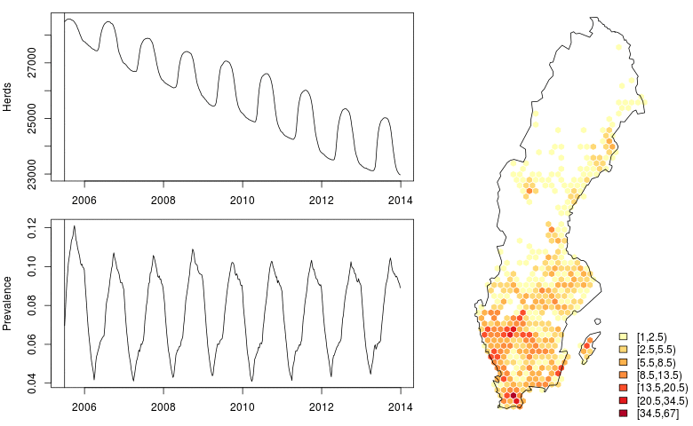
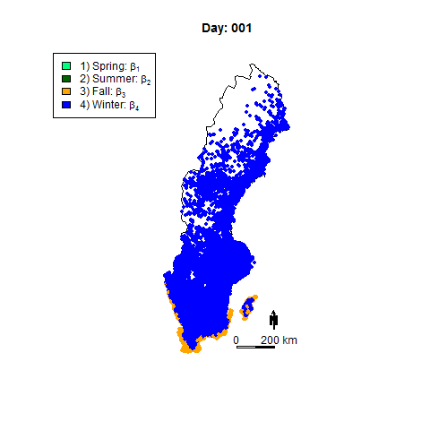

Modeling and simulation of the spread of VTEC

Escherichia
coli O157:H7 is a toxin-producing type of E. coli
that may cause serious and even deadly disease conditions in
humans. Bovine cattle act as the main reservoir of the bacteria,
carrying the bacteria for a limited amount of time during which
the bacteria is shed to the free environment. Importantly, the
animals show no sign of the disease and computational modeling
is an important means by which to understand the actual spread of
the bacteria. The simulation above shows the dynamics of
the infectious pressure, essentially the amount of bacteria
in the free environment. This simulation is very
strongly data-driven as all actual animal transports are
included, thus accurately taking the time-varying contact network
into account. Also, the effect of the varying weather conditions
is incorporated by using weather data as illustrated in the
animation below.

References
SimInf is an R-package with the ability to simulate
arbitrary models of epidemics using temporal contact data. The
package can be found
here, see also SimInf
at CRAN. The SimInf manual is available
via arXiv.
The modeling and the simulation method is described in P. Bauer,
S. Engblom, S. Widgren: Fast event-based epidemiological
simulations on national scales in Int. J. High
Perf. Comput. Appl.,
2016: (doi).
The epidemiological details and the veterinary investigations
that went into this is found in: S. Widgren, S. Engblom,
P. Bauer, J. Frössling, U. Emanuelson, and A. Lindberg:
Data-driven network modelling of disease transmission using
complete population movement data: spread of VTEC O157 in Swedish
cattle in Veterinary Res. 47:81(1):1--17,
(2016). (doi).
Stefan Engblom
Last modified: Fri Sep 6 11:52:48 CEST 2024